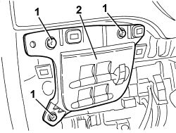

7040A56 SWITCH UNIT IN DASHBOARD - R.R.
- Path
- Procedures > 70 FITTINGS > 7040 BODY INTERIOR FITTINGS AND TRIM > 7040A PASSENGER COMPARTMENT TRIMS > 7040A56 SWITCH UNIT IN DASHBOARD - R.R.
- Kind
- repair procedure (removal / refitting; the operation number is the code)
- Applies to
- all engines; all production periods
- Interactive page
- https://sloeber94.github.io/elrnDB/#/939011240
Applies to: all engines; all production periods
 Removing
Removing
 Refitting
RefittingFor the left side.
Op. 7040A58 INSTRUMENT PANEL MOULDING - R+R
1. Undo the bolts.
2. Move the switch assembly slightly.

Applies to: all engines; all production periods
1. Disconnect the electrical connection.
Description | Component |
|---|---|
SWITCH ASSEMBLY |
2. Recover the switch unit.

Applies to: all engines; all production periods
Refitting
Removing- Check that the switch assembly is not damaged.
- Connect the electrical connection.
- Fit the switch assembly and tighten the bolts.
Topics linked from this page (2)
Topics that link to this page (35)
- 1820B21 MASTER CYLINDER (PUMP) - R R FOR RIGHT HAND DRIVE VERSIONS
- 3330B23 BRAKE PEDAL - R.R. FOR RIGHT HAND DRIVE VERSIONS
- 3330B27 CLUTCH PEDAL - R.R. FOR RIGHT HAND DRIVE VERSIONS
- 3330B42 PEDAL UNIT SUPPORT - R.R. FOR RIGHT HAND DRIVE VERSIONS
- 3330D18 BRAKE SERVO R R FOR RIGHT HAND DRRIVE VERSIONS
- E2010 SIDE LIGHTS/NUMBER PLATE LIGHT - WIRING DIAGRAM
- E2010 SIDE LIGHTS/NUMBER PLATE LIGHT - COMPONENT LOCATION
- E2010 SIDE LIGHTS/NUMBER PLATE LIGHT - WIRING DIAGRAM
- E2010 SIDE LIGHTS/NUMBER PLATE LIGHT - COMPONENT LOCATION
- E2010 SIDE LIGHTS/NUMBER PLATE LIGHT - WIRING DIAGRAM
- E2010 SIDE LIGHTS/NUMBER PLATE LIGHT - COMPONENT LOCATION
- E2010 SIDE LIGHTS/NUMBER PLATE LIGHT - WIRING DIAGRAM
- E2010 SIDE LIGHTS/NUMBER PLATE LIGHT - COMPONENT LOCATION
- E2021 BRAKE LIGHTS - WIRING DIAGRAM
- E2021 BRAKE LIGHTS - COMPONENT LOCATION
- E2021 BRAKE LIGHTS - WIRING DIAGRAM
- E2021 BRAKE LIGHTS - COMPONENT LOCATION
- E2030 FOG LIGHTS - WIRING DIAGRAM
- E2030 FOG LIGHTS - COMPONENT LOCATION
- E2031 REAR FOG LAMPS - WIRING DIAGRAM
- E2031 REAR FOG LAMPS - COMPONENT LOCATION
- E2031 REAR FOG LAMPS - WIRING DIAGRAM
- E2031 REAR FOG LAMPS - COMPONENT LOCATION
- E2535 CONTROLS LIGHTING - WIRING DIAGRAM
- E2535 CONTROLS LIGHTING - COMPONENT LOCATION
- E2535 CONTROLS LIGHTING - WIRING DIAGRAM
- E2535 CONTROLS LIGHTING - COMPONENT LOCATION
- E3080 HEADLIGHT ALIGNMENT ADJUSTMENT - WIRING DIAGRAM
- E3080 HEADLIGHT ALIGNMENT ADJUSTMENT - COMPONENT LOCATION
- E4010 INSTRUMENT PANEL - WIRING DIAGRAM
- E4010 INSTRUMENT PANEL - COMPONENT LOCATION
- E4010 INSTRUMENT PANEL - WIRING DIAGRAM
- E4010 INSTRUMENT PANEL - COMPONENT LOCATION
- E4010 INSTRUMENT PANEL - WIRING DIAGRAM
- E4010 INSTRUMENT PANEL - COMPONENT LOCATION